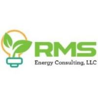
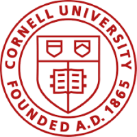

My Engineering Experience Timeline
Concussion Helmet Research Independent Study, Los Angeles, June 2018-2019
Studied animals that receive frequent head traumas like gannet birds, woodpeckers and rams to design a helmet that reduced the g-force of impacts in soccer through repeated prototyping and testing. I utilized an Arduino 200g accelerometer to deduce which prototypes were the most effective. I won 1st place in the Engineering Applications category at the Los Angeles County Science Fair for this project and kickstarted my experience in engineering.
RMS Energy Consulting, Environmental Engineering Technical Intern, Los Angeles, May 2019-December 2021
 I worked on connecting academia and start-ups with Southern California utilities to test, implement and commercialize emerging energy and sustainable technology on a wide scale. I developed measurement and verification plans for a variety of in-field and lab projects. I applied to and successfully won a $4 million DOE Electrical Vehicle grant with Stanford's National Energy Lab.
Bioreactor Control System Research and Retrofit, Cornell University Department of Environmental and Civil Engineering and Department of Electrical and Computer Engineering, January 2022-May 2023
 I worked with a master's student to retrofit a woodchip bioreactor that increased nitrate removal by overcoming limitations to denitrifying microbial metabolisms while utilizing IoT technology and feedback control to optimize performance. I created a flexible blueprint for implementing IoT technology and real-time control methods in woodchip bioreactors to facilitate the uptake of these technological innovations among farmers. In addition, I calibrated, tested and maintained all of the digital, analog and SDI-12 sensors while retrofitting them to function with Arduino technology.
Arcadis, Electrical Engineering Intern, June 2023-Present
I currently am working with Arcadis as a technical intern. Arcadis is an environmental engineering consulting company that works on sustainable design, engineering, and environmental remediation projects. In my work with them, I mostly have been working within cybersecurity and digital innovation for our environmental applications. In addition, I am OSHA field certified so I have conducted field measurements using a variety of sensors and measurement tools. I have tested a range of IoT emerging technology to be used in environmental remediation sites. I have also been working on developing digital twins' data solutions for large-scale projects with 100+ sensors and field events to better map and understand large datasets. For the cybersecurity efforts, I have helped retrofit systems with up-to-date cybersecurity protocols and equipment.
Specialized Skills
Programming Languages
- Java
- C#
- JSON (extension of JavaScript)
- HTML
- Python
- OWL (Ontology Web Language)
- Verilog
- Quartus
Fabrication Skills
- 3D printing & design
- Drilling
- Sawing
- Wiring & soldering
- Circuit design
- Measurement & verification testing skills
- Ecad (circuit design)
Design Skills
- Proficiency in drawing, painting & print design
- Understanding of principles of design
- Photoshop experience
Interpersonal Skills
- Leadership skills
- Communication skills
- Project management
- MS Office (Excel, powerpoint, etc)
- Grant Writing
- Academic and scientific writing
Awards & Additional Experiences
- Louis Stokes Alliances for Minority Participation (LSAMP) Research Scholar awarded May 2023: I was funded by the LSAMP program during May 2022-August 2022 to conduct full time research at Cornell. I worked in Matthew Reid's lab working on the digital innovation for our woodchip bioreactor automation project.
- Semiconductor Research Corporation Scholar awarded August 2022: I was awarded this funding from Intel, IBM and Texas Instruments to sponsor my research during the school-year from 2022 to 2023.
- DOE Grant DE-FOA-0002475 (on behalf of RMS) awarded October 2022: I wrote, applied and successfully won a $4 million DOE Electric Vehicle grant with Stanford's National Energy Lab for RMS Energy Consulting (when I was working as a technical specialist). I proposed a solution that utilized SLAC's smart charging infrastructure planning tool to be in a living-lab study with Southern California Edison (SCE) that trains engineers how to utilize the tool to optimize and expand SCE's charging infrastructure.
- Presented at Cornell Institute for Digital Technology's Symposium in October 2022: I presented a scientific poster and a short talk about my contributions to the automated bioreactor research
- First Undergraduate to speak at NASA & ESIP's Ignite at AGU Talk in December 2022: I presented a 5-minute ignite format talk where I utilized my bioreactor research as a metaphor for how we need to increase support and actively uplift underrepresented minorities in engineering. I also shared my own experience of being a bi-racial queer latina in the electrical and environmental engineering spheres.
Relevant Coursework
Electrical and Computer Engineering Classes
-
ECE 3150: Introduction to Microelectronics, Spring 2023
This class helped me understand how semiconductors function, their range of possibilities and importance in the electronic industry. Here is the syllabus for when I took the class.
-
ECE 4210: Network Systems and Games, Spring 2023
Description that still needs to be added. Here is the syllabus for when I took the class.
-
ECE 4760: Digital Systems Design with Microcontrollers, Fall 2023
Description that still needs to be added. Here is the course website for when I took the class.
-
ECE 2720: Data Science for Engineers, Fall 2022
Description that still needs to be added. Here is the syllabus for when I took the class.
Environmental Science and Engineering Classes
-
BIOEE 3640: Birds and Climate Change, Fall 2022
Description that still needs to be added. Here is the syllabus for when I took the class.
-
EAS 2250: The Earth System, Spring 2023
Description that still needs to be added. Here is the course description for when I took the class because I could not locate the syllabus.
-
GDEV 3030: Food Cycle: Systems Thinking Toward Circular Economy for Organic Resources, Fall 2022
Description that still needs to be added. Here is the syllabus for when I took the class.